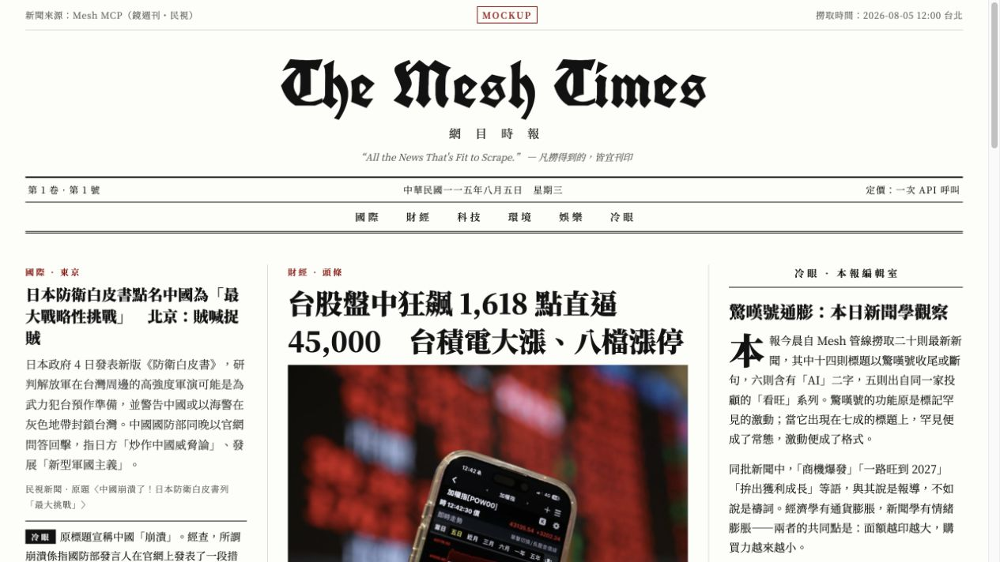
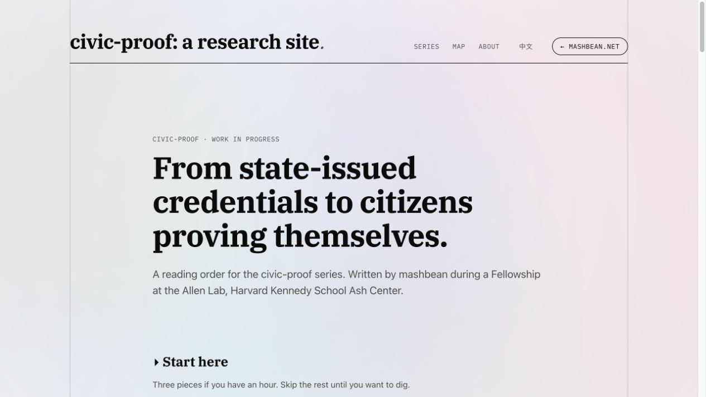
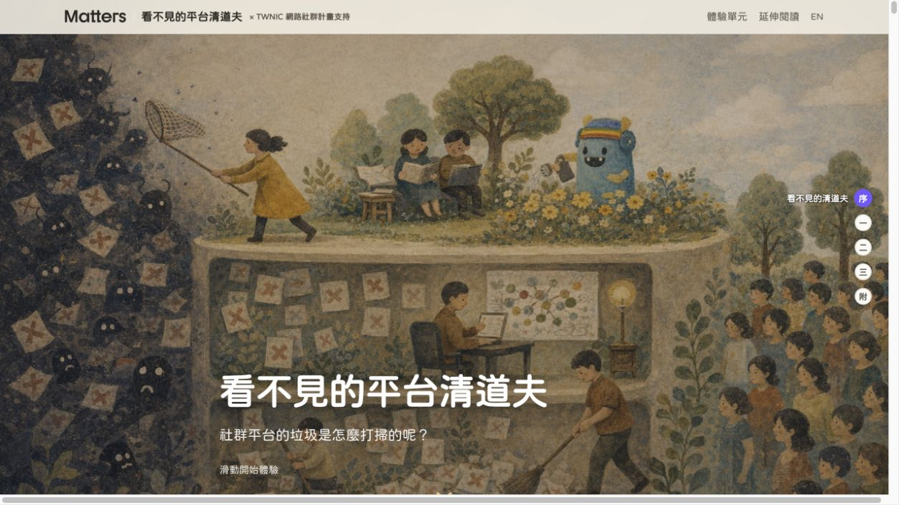
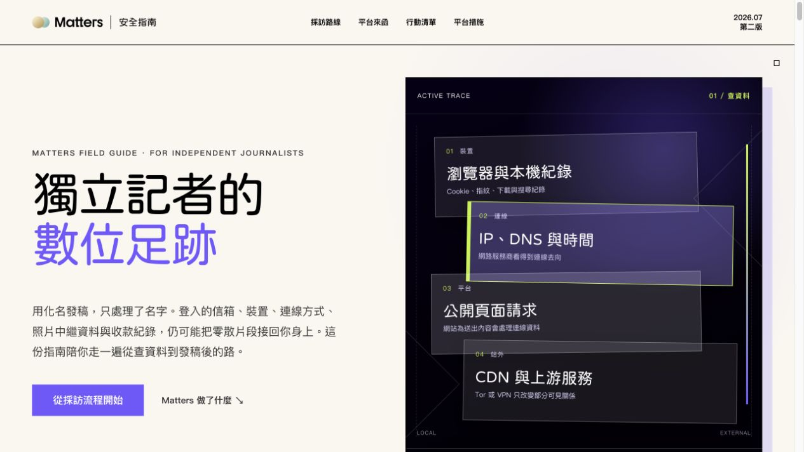
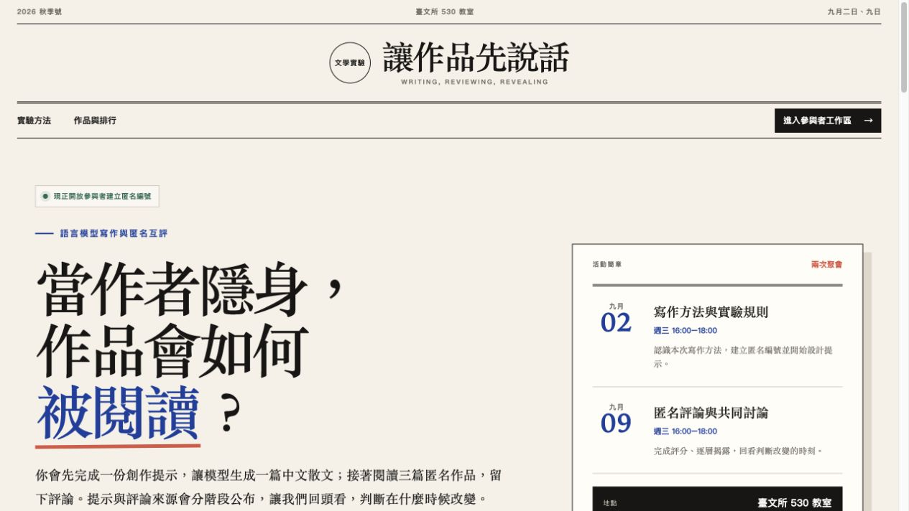
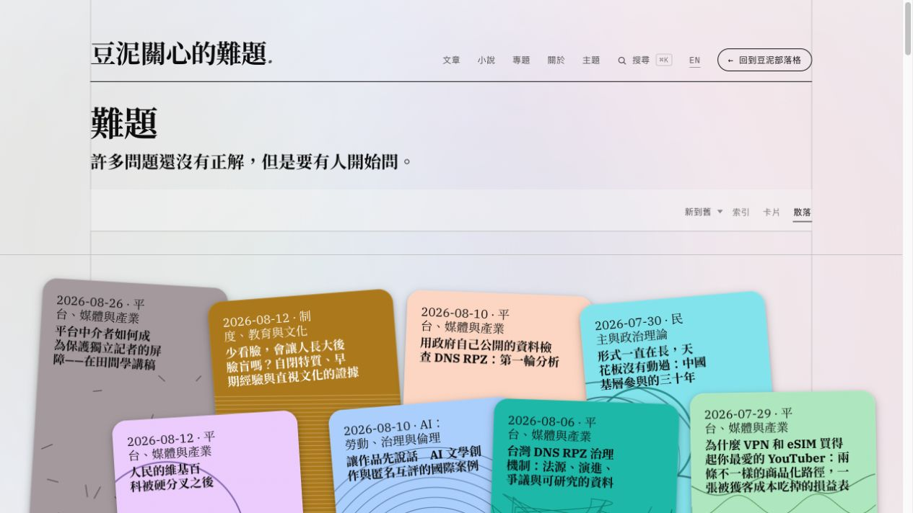

<!doctype html>
<html lang="zh-Hant-TW">
<head>
<meta charset="utf-8">
<meta name="viewport" content="width=device-width,initial-scale=1">
<meta name="description" content="臨床工作者的 AI Agent 第一課。從判斷、資料與品味，走到研究流程、成果驗證與互動案例。">
<title>臨床工作者的 AI Agent 第一課 · MashBean</title>
<link rel="preconnect" href="https://fonts.googleapis.com">
<link rel="preconnect" href="https://fonts.gstatic.com" crossorigin>
<link href="https://fonts.googleapis.com/css2?family=DM+Sans:wght@500;600;700&family=JetBrains+Mono:wght@500;700&family=Noto+Sans+TC:wght@400;500;600;700;900&display=swap" rel="stylesheet">
<style>
:root{
  --night:#07101f;--night2:#0b1730;--panel:#0d1c37e8;--ink:#f6f8ff;--muted:#aab8d5;
  --cyan:#35dcff;--pink:#ff4f9a;--violet:#8b5cf6;--lime:#b9f24a;--yellow:#ffd84d;--line:#2a4168;
}
*{box-sizing:border-box}
html,body{margin:0;background:#000;color:var(--ink);font-family:'Noto Sans TC',sans-serif}
deck-stage{display:block}
section{font-family:'Noto Sans TC',sans-serif;line-break:strict;overflow-wrap:break-word}
.slide{
  width:100%;height:100%;padding:78px 92px;position:relative;overflow:hidden;display:flex;flex-direction:column;
  color:var(--ink);background-color:var(--night);
  background-image:linear-gradient(#35dcff15 1px,transparent 1px),linear-gradient(90deg,#35dcff15 1px,transparent 1px),radial-gradient(circle at 90% 0,#8b5cf642 0,transparent 34rem);
  background-size:40px 40px,40px 40px,auto;
}
.theme-violet{background-color:#160e37;background-image:linear-gradient(#ffd84d12 1px,transparent 1px),linear-gradient(90deg,#ffd84d12 1px,transparent 1px),radial-gradient(circle at 85% 5%,#ff4f9a55 0,transparent 34rem);background-size:40px 40px,40px 40px,auto}
.theme-blue{background-color:#071d3e;background-image:linear-gradient(#b9f24a12 1px,transparent 1px),linear-gradient(90deg,#b9f24a12 1px,transparent 1px),radial-gradient(circle at 90% 0,#35dcff48 0,transparent 34rem);background-size:40px 40px,40px 40px,auto}
.theme-pink{background-color:#2b0a2c;background-image:linear-gradient(#35dcff12 1px,transparent 1px),linear-gradient(90deg,#35dcff12 1px,transparent 1px),radial-gradient(circle at 85% 0,#ff4f9a55 0,transparent 34rem);background-size:40px 40px,40px 40px,auto}
.eyebrow{font:700 21px/1.4 'JetBrains Mono',monospace;letter-spacing:.13em;text-transform:uppercase;color:var(--cyan)}
h1,h2,h3,p{margin:0}.mono{font-family:'JetBrains Mono',monospace}.muted{color:var(--muted)}
.display{font-family:'DM Sans','Noto Sans TC',sans-serif;font-size:126px;line-height:.98;letter-spacing:-.055em;font-weight:700;text-wrap:balance}
.title{font-family:'DM Sans','Noto Sans TC',sans-serif;font-size:72px;line-height:1.08;letter-spacing:-.035em;font-weight:700;text-wrap:balance}
.title-lg{font-family:'DM Sans','Noto Sans TC',sans-serif;font-size:92px;line-height:1.03;letter-spacing:-.04em;font-weight:700;text-wrap:balance}
.subtitle{font-size:39px;line-height:1.33;font-weight:650;text-wrap:balance}.body{font-size:29px;line-height:1.54;font-weight:500}.body-sm{font-size:24px;line-height:1.5}
.accent{color:var(--yellow)}.accent-pink{color:var(--pink)}.accent-lime{color:var(--lime)}
.footer{position:absolute;left:92px;right:92px;bottom:38px;display:flex;justify-content:space-between;align-items:center;font:600 18px/1 'JetBrains Mono',monospace;letter-spacing:.07em;text-transform:uppercase;color:var(--muted)}
.grid-2{display:grid;grid-template-columns:1fr 1fr;gap:28px}.grid-3{display:grid;grid-template-columns:repeat(3,1fr);gap:24px}.grid-4{display:grid;grid-template-columns:repeat(4,1fr);gap:18px}.grid-5{display:grid;grid-template-columns:repeat(5,1fr);gap:14px}
.card{border:2px solid var(--line);padding:32px;border-radius:18px;background:var(--panel);min-width:0}.card.hot{border-color:#ff4f9a88;background:#ff4f9a17}.card.cool{border-color:#35dcff88;background:#35dcff13}.card.lime{border-color:#b9f24a88;background:#b9f24a12}
.card h3{font-size:35px;line-height:1.2;margin:12px 0}.card p{font-size:25px;line-height:1.48;color:var(--muted)}
.num{font:700 22px/1 'JetBrains Mono',monospace;color:var(--pink);margin-bottom:16px}.pill{display:inline-flex;padding:10px 18px;border:2px solid currentColor;border-radius:999px;font:700 18px/1 'JetBrains Mono',monospace;letter-spacing:.05em}
.compare{display:grid;grid-template-columns:1fr 1fr;gap:28px;margin-top:46px;flex:1}.compare>div{padding:38px;border:2px solid var(--line);border-radius:18px;background:var(--panel)}.compare h3{font-size:45px;margin:20px 0}.compare li{font-size:27px;line-height:1.46;margin:12px 0}.compare ul{padding-left:28px}
.timeline{display:grid;grid-template-columns:repeat(3,1fr);gap:24px;margin-top:55px}.timeline>div{padding:34px;border-left:4px solid var(--cyan);background:var(--panel)}.timeline .time{font:700 22px/1 'JetBrains Mono',monospace;color:var(--yellow)}.timeline h3{font-size:43px;margin:18px 0 10px}.timeline p{font-size:25px;line-height:1.45;color:var(--muted)}
.qr-layout{display:grid;grid-template-columns:1fr 520px;gap:64px;align-items:center;flex:1}.qr-box{background:#fff;padding:28px;border-radius:26px;box-shadow:0 24px 70px #02061270}.qr-box img{display:block;width:100%}.qr-url{font:700 22px/1.4 'JetBrains Mono',monospace;color:var(--cyan);margin-top:22px}
.tag-list{display:flex;flex-wrap:wrap;gap:14px}.tag-list span{padding:13px 19px;border:2px solid var(--line);border-radius:999px;font-size:23px;font-weight:700;background:var(--panel)}
.flow{display:grid;grid-template-columns:repeat(5,1fr);gap:14px;margin-top:54px}.step{padding:30px 24px;border:2px solid var(--line);border-radius:16px;background:var(--panel);min-height:230px}.step b{display:block;font-size:31px;margin:14px 0}.step span{font-size:22px;color:var(--muted)}
.sequence{display:flex;align-items:center;gap:14px;margin-top:60px}.node{flex:1;min-height:230px;padding:28px;border:2px solid var(--line);border-radius:16px;background:var(--panel);display:flex;flex-direction:column;justify-content:space-between}.node b{font-size:34px}.node span{font-size:22px;color:var(--muted)}.chev{font-size:50px;color:var(--pink)}
.role-grid{display:grid;grid-template-columns:repeat(4,1fr);gap:18px}.role{padding:28px 23px;border:2px solid var(--line);border-radius:16px;background:var(--panel)}.role b{font:700 20px/1.2 'JetBrains Mono',monospace;color:var(--yellow)}.role h3{font-size:33px;margin:13px 0}.role p{font-size:22px;line-height:1.45;color:var(--muted)}
.matrix{display:grid;grid-template-columns:230px repeat(4,1fr);border:2px solid var(--line);border-radius:18px;overflow:hidden;margin-top:42px}.matrix>div{min-height:92px;padding:20px;border-right:1px solid var(--line);border-bottom:1px solid var(--line);display:flex;align-items:center;justify-content:center;text-align:center;font-size:22px}.matrix>div:nth-child(5n){border-right:0}.matrix .head{font-weight:800;background:#35dcff18}.matrix .rowhead{justify-content:flex-start;font-size:26px;font-weight:800;background:#ff4f9a14}.matrix .filled{background:#8b5cf65c;font-weight:800}
.source-card{margin-top:42px;padding:28px 32px;border:2px solid var(--pink);border-radius:18px;background:#ff4f9a14}.source-card a{color:var(--cyan);font:700 19px/1.4 'JetBrains Mono',monospace}
.case-shot{position:absolute;inset:0;display:block;color:var(--ink);background:#030712;text-decoration:none}.case-shot img{width:100%;height:100%;object-fit:cover;display:block;filter:saturate(1.06) contrast(1.02)}.case-shot::after{content:'';position:absolute;inset:0;box-shadow:inset 0 0 0 18px #07101fe6;pointer-events:none}.case-url{position:absolute;left:42px;bottom:38px;padding:14px 20px;border:1px solid #ffffff55;border-radius:999px;background:#07101fe8;backdrop-filter:blur(10px);font:700 20px/1 'JetBrains Mono',monospace}.case-open{position:absolute;right:42px;bottom:38px;width:58px;height:58px;border-radius:50%;display:grid;place-items:center;background:var(--cyan);color:var(--night);font:900 30px/1 'JetBrains Mono',monospace}
.ghost-orbit{position:absolute;border-radius:50%;filter:blur(1px);opacity:.82}.line{height:2px;background:var(--line);width:100%}
section[data-label="我真的問過"] .card{padding:22px 28px}section[data-label="我真的問過"] .card h3{font-size:31px}
section[data-deck-active] [data-reveal],section[data-deck-active] .card,section[data-deck-active] .step,section[data-deck-active] .node,section[data-deck-active] .role,section[data-deck-active] .case-shot img{will-change:transform,opacity}
@media print{[data-reveal]{opacity:1!important;visibility:visible!important;transform:none!important}}
@media(prefers-reduced-motion:reduce){[data-reveal],.card,.step,.node,.role,.case-shot img{will-change:auto!important}}
</style>
</head>
<body>
<script type="application/json" id="speaker-notes">[]</script>
<deck-stage width="1920" height="1080" id="deck"></deck-stage>
<script>
const S=(label,theme,body)=>`<section data-label="${label}"><div class="slide ${theme}">${body}</div></section>`;
const F=(left,right)=>`<div class="footer"><span>${left}</span><span>${right}</span></div>`;
const slides=[
S('封面','theme-violet',`
  <div class="ghost-orbit" style="width:720px;height:720px;background:var(--violet);right:-250px;top:-320px"></div>
  <div class="ghost-orbit" style="width:280px;height:280px;background:var(--pink);right:270px;bottom:-110px"></div>
  <div data-reveal class="eyebrow">AI 醫點也不難 · 8/14</div>
  <div style="margin-top:auto;position:relative;z-index:1"><h1 data-reveal class="display">臨床工作者的<br>AI Agent 第一課</h1><p data-reveal class="subtitle" style="margin-top:30px">讓 AI 提升工作品質，把驗證放進日常流程</p></div>
  ${F('黃豆泥 黃彥霖 M.D.','2026.08.14 · 21:00–23:00')}`),
S('今年的綱要','',`
  <div data-reveal class="eyebrow">COURSE MAP</div><h2 data-reveal class="title" style="margin-top:22px">今年的綱要</h2>
  <div data-reveal class="timeline"><div><div class="time">00–50</div><h3>簡單版</h3><p>三個啊哈、研究流程、驗證方法。</p></div><div><div class="time">50–70</div><h3>困難版</h3><p>看幾個真的做下去的互動案例。</p></div><div><div class="time">70–110</div><h3>Q&A</h3><p>問題全程送出，最後依問題脈絡一起回答。</p></div></div>
  ${F('服務 · 教學 · 研究 · 公關','問題可以全程送出')}`),
S('隨時提問','theme-blue',`
  <div class="qr-layout"><div><div data-reveal class="eyebrow">ALWAYS-OPEN QUESTION POOL</div><h2 data-reveal class="title-lg" style="margin-top:24px">想到就先問<br>不用等到最後</h2><p data-reveal class="body" style="margin-top:30px">每一題都會留下。相近問題可以整理成同一段，但原題不會消失。你也可以按「我也想問」，讓我們看見共同困擾、立場差異與不能漏掉的提醒。</p><div data-reveal class="qr-url">mashbean.net/clinical-ai-0814/</div></div><div data-reveal class="qr-box"></div></div>
  ${F('隨時提問 · 我也想問','講後整理回覆收據')}`),
S('開場投票','theme-pink',`
  <div class="qr-layout"><div><div data-reveal class="eyebrow">POLL 01 · STARTING POINT</div><h2 data-reveal class="title-lg" style="margin-top:24px">你現在把 AI<br>用到哪一層？</h2><div data-reveal class="tag-list" style="margin-top:42px"><span>偶爾聊天</span><span>搜尋與整理</span><span>交付完整任務</span><span>固定工作流</span></div></div><div data-reveal class="qr-box"></div></div>
  ${F('第 1 題','答案可以修改')}`),
S('我是誰','',`
  <div data-reveal class="eyebrow">02 · 我是誰</div><h2 data-reveal class="title" style="margin-top:22px">不是工程師，工作橫跨<br>政策、公共領域與產品</h2>
  <div data-reveal class="grid-4" style="margin-top:48px;flex:1"><div class="card cool"><div class="num">現在</div><h3>Matters<br>總經理</h3><p>抗審查社群平台</p></div><div class="card lime"><div class="num">研究</div><h3>ISF 2026<br>Global Fellow</h3><p>公共利益與數位制度</p></div><div class="card hot"><div class="num">政策</div><h3>Oxford<br>MPP 2026/27</h3><p>公共政策與治理</p></div><div class="card"><div class="num">以前</div><h3>醫師<br>→ 數位民主</h3><p>數位發展部資安制度工程師</p></div></div>
  ${F('黃彥霖 M.D.','繞遠路之後，剛好用得上')}`),
S('給非工程師','theme-pink',`
  <div data-reveal class="eyebrow">03 · 為什麼這場給非工程師</div><h2 data-reveal class="title-lg" style="margin-top:34px">你不需要會寫程式。<br>你需要 <span class="accent">判斷</span>、<span class="accent-lime">資料</span> 和 <span style="color:var(--cyan)">品味</span>。</h2>
  <div data-reveal class="grid-3" style="margin-top:auto"><div><div class="num">判斷</div><p class="body">知道答案到底好不好。</p></div><div><div class="num">資料</div><p class="body">知道哪些來源值得處理。</p></div><div><div class="num">品味</div><p class="body">知道哪些問題只有你問得出來。</p></div></div>
  ${F('非工程師的優勢','脈絡比語法難學')}`),
S('Chat 與 Agent','',`
  <div data-reveal class="eyebrow">04 · CHAT 與 AGENT</div><h2 data-reveal class="title" style="margin-top:22px">這是兩種完全不同的工具。</h2>
  <div data-reveal class="compare"><div><span class="pill">CHAT</span><h3>一段對話</h3><ul><li>手機或筆電</li><li>快速回答、改寫、腦力激盪</li><li>輕量、友善、熟悉</li></ul></div><div style="border-color:#35dcff88"><span class="pill" style="color:var(--cyan)">AGENT</span><h3>一套工作流程</h3><ul><li>在你的電腦上運作</li><li>讀檔案、寫工具、交初稿</li><li>深入、可重複、可流程化</li></ul></div></div>
  ${F('對話處理片段','Agent 處理任務')}`),
S('我現在怎麼用','theme-blue',`
  <div data-reveal class="eyebrow">05 · 我現在怎麼用</div><h2 data-reveal class="title" style="margin-top:22px">聊天處理情緒。<br>其他交給 Agent。</h2>
  <div data-reveal class="compare"><div><span class="pill">CHAT</span><h3>我繼續用在</h3><ul><li>輕量聊天與壞心情檢查</li><li>回覆簡單 email</li><li>Deep Research</li></ul></div><div><span class="pill" style="color:var(--lime)">AGENT</span><h3>其他慢慢搬過去</h3><ul><li>研究、分析、文件工作</li><li>在筆電上做小工具</li><li>一再執行的流程</li></ul></div></div>
  ${F('經驗法則','同一件事問到第 3 次，就變成流程')}`),
S('重點一','theme-violet',`
  <div data-reveal class="eyebrow">06 · 重點一</div><h2 data-reveal class="display" style="font-size:118px;margin-top:auto">讓模型思考。</h2><p data-reveal class="subtitle" style="margin-top:34px;max-width:1300px">碰到難題，速度不是重點。推理時間拉長，答案通常更好。</p>
  <div data-reveal class="tag-list" style="margin-top:42px"><span>快</span><span>即時</span><span style="border-color:var(--pink)">思考</span><span style="border-color:var(--yellow)">Pro · 深度</span></div>
  ${F('重點一','難題值得多等一下')}`),
S('重點二','theme-blue',`
  <div data-reveal class="eyebrow">07 · 重點二</div><h2 data-reveal class="title-lg" style="margin-top:26px">多付一點錢<br>其實很便宜。</h2>
  <div data-reveal class="compare"><div><div class="num">感覺像</div><h3>每月多一筆訂閱費</h3><p class="body muted">農忙或有研究經費時，我會把 thinking 拉到 Pro。</p></div><div><div class="num">相比於</div><h3>聘一個人</h3><p class="body muted">生產力提升不是線性的，但價差真的小很多。</p></div></div>
  ${F('先把難題交給夠好的模型','再談怎麼省')}`),
S('為什麼開始','theme-pink',`
  <div data-reveal class="eyebrow">08 · 為什麼開始</div><h2 data-reveal class="title" style="margin-top:22px">起點不是好奇。<br>是公司裁員。</h2>
  <div data-reveal class="sequence"><div class="node"><div class="num">01</div><b>公司承受壓力</b><span>資源開始縮緊</span></div><div class="chev">›</div><div class="node"><div class="num">02</div><b>我們必須縮編</b><span>一位工程師離開</span></div><div class="chev">›</div><div class="node"><div class="num">03</div><b>所以我跳進去做</b><span>農曆年下載了 Agent，然後就回不去了</span></div></div>
  ${F('壓力先來','工具才進場')}`),
S('啊哈一 資料夾','theme-blue',`
  <div data-reveal class="eyebrow">09 · 啊哈時刻一</div><h2 data-reveal class="title-lg" style="margin-top:22px">它整理了一個資料夾。</h2>
  <div data-reveal class="compare"><div><div class="num">以前</div><h3 style="font-size:82px">1,000+</h3><p class="body muted">檔案，完全沒結構。</p></div><div><div class="num">一次回合之後</div><h3>research/<br>policy-drafts/<br>archive/</h3><p class="body muted">命名、標日期、分類完成。</p></div></div>
  ${F('第一個啊哈','它真的碰得到我的工作')}`),
S('啊哈二 走路','',`
  <div data-reveal class="eyebrow">AHA · WALKING</div><h2 data-reveal class="title-lg" style="margin-top:24px">靈感來自走路。<br>我寧願多走一點。</h2>
  <div data-reveal class="grid-3" style="margin-top:auto"><div class="card"><div class="num">01</div><h3>先讓 Agent 走</h3><p>把整理、搜尋與初稿交出去。</p></div><div class="card hot"><div class="num">02</div><h3>自己保留路感</h3><p>知道問題在哪，也知道何時偏航。</p></div><div class="card lime"><div class="num">03</div><h3>最後一起回看</h3><p>把方法帶走，下一次走得更快。</p></div></div>
  ${F('委任腳程','保留方向感')}`),
S('蜂群與瓶頸','theme-violet',`
  <div data-reveal class="eyebrow">SWARM · BOTTLENECK</div><h2 data-reveal class="title" style="margin-top:22px">Agent 像蜂群。<br>真正的瓶頸慢慢變成我。</h2>
  <div data-reveal class="grid-3" style="margin-top:auto"><div class="card cool"><h3>它們可以同時做</h3><p>研究、整理、改稿、做圖、跑測試。</p></div><div class="card hot"><h3>我還是只有一個人</h3><p>看結果、做判斷、決定往哪走。</p></div><div class="card lime"><h3>所以要設計收網</h3><p>停下並驗收，否則產出只會一直堆高。</p></div></div>
  ${F('多 Agent 不等於多判斷','人類瓶頸要被看見')}`),
S('啊哈二 部落格','theme-pink',`
  <div data-reveal class="eyebrow">10 · 啊哈時刻二</div><h2 data-reveal class="title-lg" style="margin-top:22px">拖了好幾年的<br>部落格。</h2>
  <div data-reveal class="compare"><div><div class="num">散落多年</div><h3>舊貼文、專欄草稿、.docx、備忘錄</h3><p class="body muted">文字都在，結構一直沒有出現。</p></div><div><div class="num">一個週末</div><h3 style="font-size:60px">真正的部落格，終於。</h3><p class="body muted">多年文字整理並發布。</p></div></div>
  ${F('第二個啊哈','完成多年沒做完的事')}`),
S('設計系統留下','',`
  <div data-reveal class="eyebrow">11 · 案例</div><h2 data-reveal class="title" style="margin-top:22px">設計師離開，設計系統留下。</h2>
  <div data-reveal class="sequence"><div class="node"><div class="num">來源</div><b>Figma 設計系統</b><span>離職設計師留下的資產</span></div><div class="chev">›</div><div class="node"><div class="num">AGENT 週末</div><b>整理 → 推上 Git</b><span>tokens、元件、文件</span></div><div class="chev">›</div><div class="node"><div class="num">輸出</div><b>新頁面 2–3 小時</b><span>把服務做出來所需的人力正在下降</span></div></div>
  ${F('我不是設計師','也不是前端工程師')}`),
S('虛偽全能感','theme-pink',`
  <div data-reveal class="eyebrow">THE FALSE OMNIPOTENCE TRAP</div><h2 data-reveal class="display" style="font-size:106px;margin-top:auto">做得到很多事，<br>很容易誤以為<br>每件事都該做。</h2><p data-reveal class="subtitle muted" style="margin-top:30px">工具能力上升之後，選擇題反而變多。真正稀缺的是注意力、責任與收手的時機。</p>
  ${F('能力增加','邊界要更清楚')}`),
S('Maker 能動性','theme-blue',`
  <div data-reveal class="eyebrow">MAKER AGENCY</div><h2 data-reveal class="title-lg" style="margin-top:24px">以前要等資源。<br>現在可以先做一版。</h2>
  <div data-reveal class="grid-3" style="margin-top:auto"><div class="card"><h3>先把問題放上桌</h3><p>不必等到組織排出完整專案。</p></div><div class="card hot"><h3>讓別人看見</h3><p>網頁、文章、原型都能成為討論材料。</p></div><div class="card lime"><h3>用回饋決定下一步</h3><p>值得做，再投入更多資源。</p></div></div>
  ${F('Release early 的精神','能動性先發生')}`),
S('研究出版流程','',`
  <div data-reveal class="eyebrow">12 · 研究出版流程</div><h2 data-reveal class="title" style="margin-top:22px">五個角色。一條接力。</h2>
  <div data-reveal class="flow"><div class="step"><div class="num">01</div><b>研究者</b><span>蒐集來源</span></div><div class="step"><div class="num">02</div><b>寫作者</b><span>形成初稿</span></div><div class="step"><div class="num">03</div><b>批判者</b><span>壓力測試</span></div><div class="step"><div class="num">04</div><b>編輯</b><span>修稿與去味</span></div><div class="step"><div class="num">05</div><b>發布者</b><span>交付成果</span></div></div>
  <p data-reveal class="subtitle" style="margin-top:38px">每個角色都有自己的提示詞、任務與責任。</p>
  ${F('research-publishing-pipeline','角色分開，責任才看得見')}`),
S('流程為什麼重要','theme-violet',`
  <div data-reveal class="eyebrow">13 · 為什麼流程重要</div><h2 data-reveal class="title" style="margin-top:22px">把流程標準化。<br>品質就不再漂移。</h2>
  <div data-reveal class="grid-4" style="margin-top:auto"><div class="card cool"><div class="display" style="font-size:108px;color:var(--cyan)">01</div><h3>標準化流程</h3></div><div class="card hot"><div class="display" style="font-size:108px;color:var(--pink)">02</div><h3>穩定品質</h3></div><div class="card lime"><div class="display" style="font-size:108px;color:var(--lime)">03</div><h3>減少幻覺</h3></div><div class="card"><div class="display" style="font-size:108px;color:var(--yellow)">04</div><h3>持續改善</h3></div></div>
  ${F('流程不是束縛','是可以反覆改好的骨架')}`),
S('推理鏈','theme-blue',`
  <div data-reveal class="eyebrow">14 · 推理鏈</div><h2 data-reveal class="title" style="margin-top:22px">這是思考結構，也是寫作骨架。</h2>
  <div data-reveal class="sequence"><div class="node"><b>核心問題</b><span>01</span></div><div class="chev">›</div><div class="node"><b>子論點</b><span>02</span></div><div class="chev">›</div><div class="node"><b>證據</b><span>03</span></div><div class="chev">›</div><div class="node"><b>風險檢查</b><span>04</span></div><div class="chev">›</div><div class="node"><b>整合</b><span>05</span></div></div>
  ${F('把思考拆開','才知道哪裡需要重跑')}`),
S('五種推理','',`
  <div data-reveal class="eyebrow">15 · 五種推理</div><h2 data-reveal class="title" style="margin-top:22px">每一種都有不同風險。</h2>
  <div data-reveal class="grid-2" style="margin-top:45px"><div class="card cool"><div class="num">01</div><h3>演繹</h3><p>把規則套到案例</p></div><div class="card hot"><div class="num">02</div><h3>歸納</h3><p>從案例找模式</p></div><div class="card lime"><div class="num">03</div><h3>類比</h3><p>比較相似案例</p></div><div class="card"><div class="num">04</div><h3>溯因</h3><p>尋找最佳解釋</p></div><div class="card" style="grid-column:1 / span 2;border-color:var(--pink)"><div class="num">05</div><h3>因果推理</h3><p>解釋原因與結果，風險最高，需要最多證據。</p></div></div>
  ${F('推理方式不同','驗證方式也要跟著換')}`),
S('每日訓練','theme-violet',`
  <div data-reveal class="eyebrow">16 · 每日訓練</div><h2 data-reveal class="title-lg" style="margin-top:22px">每天一個<br>真正困難的問題。</h2>
  <div data-reveal class="grid-4" style="margin-top:auto"><div><div class="display" style="font-size:110px;color:var(--cyan)">①</div><h3 class="subtitle">提問</h3><p class="body-sm muted">值得花一天處理的真問題。</p></div><div><div class="display" style="font-size:110px;color:var(--pink)">②</div><h3 class="subtitle">執行</h3><p class="body-sm muted">把它推進流程。</p></div><div><div class="display" style="font-size:110px;color:var(--lime)">③</div><h3 class="subtitle">發布</h3><p class="body-sm muted">寫成文章或存檔。</p></div><div><div class="display" style="font-size:110px;color:var(--yellow)">④</div><h3 class="subtitle">調校</h3><p class="body-sm muted">改善提示詞與角色。</p></div></div>
  ${F('我在訓練自己問得更好','也訓練 Agent 答得更好')}`),
S('我真的問過','theme-blue',`
  <div data-reveal class="eyebrow">17 · 我真的問過的問題</div><h2 data-reveal class="title" style="margin-top:22px">那些還沒有人<br>可以一起討論的問題。</h2>
  <div data-reveal style="display:grid;gap:16px;margin-top:45px"><div class="card"><div class="num">Q1</div><h3>國際上哪些媒體收益分潤模式真的有效？</h3></div><div class="card"><div class="num">Q2</div><h3>我們如何評估流亡社群的影響力？</h3></div><div class="card"><div class="num">Q3</div><h3>AI Agent 身分需要什麼政策？</h3></div><div class="card"><div class="num">Q4</div><h3>各國年齡驗證法律的真實效果是什麼？</h3></div></div>
  ${F('好問題先出現','答案才有機會成熟')}`),
S('委任與保留','',`
  <div data-reveal class="eyebrow">18 · 人還是要做什麼</div><h2 data-reveal class="title" style="margin-top:22px">委任無聊的事。<br>保留判斷。</h2>
  <div data-reveal class="compare"><div><span class="pill">委任給 AGENT</span><h3>讓工具走路</h3><ul><li>重複工作</li><li>檔案整理</li><li>初稿</li><li>資料清理</li></ul></div><div><span class="pill" style="color:var(--yellow)">留給自己</span><h3>方向留在手上</h3><ul><li>提出問題</li><li>判斷答案</li><li>做決定</li><li>品味與脈絡</li></ul></div></div>
  ${F('委任無聊的事','保留判斷')}`),
S('誰最適合','theme-pink',`
  <div data-reveal class="eyebrow">19 · 誰最適合用 Agent</div><h2 data-reveal class="title" style="margin-top:22px">兩種人最能用出效果。</h2>
  <div data-reveal class="compare"><div><div class="display" style="font-size:190px;color:var(--pink)">A</div><h3 style="font-size:58px">有品味的人</h3><p class="body muted">你能問出只有你才想得到的問題。</p></div><div><div class="display" style="font-size:190px;color:var(--yellow)">B</div><h3 style="font-size:58px">有資料的人</h3><p class="body muted">你知道來源在哪裡，也知道怎麼組合。</p></div></div>
  ${F('Agent 放大原有優勢','問題與來源缺一不可')}`),
S('非工程師優勢','theme-blue',`
  <div data-reveal class="eyebrow">DOMAIN EXPERT ADVANTAGE</div><h2 data-reveal class="title-lg" style="margin-top:26px">非工程師的優勢<br>其實很難取代。</h2>
  <div data-reveal class="grid-3" style="margin-top:auto"><div class="card cool"><h3>你知道哪裡不對勁</h3><p>語氣、脈絡、風險都靠領域經驗。</p></div><div class="card hot"><h3>你知道問題值不值得問</h3><p>工具擅長答題，題目仍由人決定。</p></div><div class="card lime"><h3>你知道成果能不能交</h3><p>驗收標準來自工作現場。</p></div></div>
  ${F('領域知識是槓桿','Agent 把它放大')}`),
S('啊哈三 慢下來','theme-violet',`
  <div data-reveal class="eyebrow">AHA · SLOW DOWN</div><h2 data-reveal class="display" style="font-size:110px;margin-top:auto">工具變快之後，<br>我反而學會慢下來。</h2><p data-reveal class="subtitle muted" style="margin-top:32px">先定義問題、再等研究、接著查來源，最後才決定要不要發布。快的是機器，節奏還是自己的。</p>
  ${F('第三個啊哈','速度留給工具，節奏留給自己')}`),
S('明天就試','',`
  <div data-reveal class="eyebrow">20 · 明天就試</div><h2 data-reveal class="title-lg" style="margin-top:26px">問更好的問題。<br><span class="accent">用更好的方法。</span></h2>
  <div data-reveal class="grid-4" style="margin-top:auto"><div class="card"><div class="num">01</div><h3>下載一個 Agent</h3></div><div class="card"><div class="num">02</div><h3>選更強的模型</h3></div><div class="card"><div class="num">03</div><h3>問一個難題</h3></div><div class="card"><div class="num">04</div><h3>把重複工作變流程</h3></div></div>
  ${F('明天就試','先做一件真的會再做的事')}`),
S('胡椒鹽','theme-pink',`
  <div data-reveal class="eyebrow">POLL 02 · PEPPER & SALT</div><h2 data-reveal class="title" style="margin-top:22px">臨床人的胡椒鹽<br>哪裡最值得 Agent 進場？</h2>
  <div style="display:grid;grid-template-columns:1fr 320px;gap:28px;margin-top:40px;flex:1"><div data-reveal class="role-grid"><div class="role"><b>01</b><h3>服務</h3><p>行政、報表、申請、追蹤</p></div><div class="role"><b>02</b><h3>教學</h3><p>讀書會、教材、題庫、回饋</p></div><div class="role"><b>03</b><h3>研究</h3><p>文獻、資料整理、引註查核</p></div><div class="role"><b>04</b><h3>公關</h3><p>衛教、社群、簡報、對外說明</p></div></div><div data-reveal class="qr-box" style="align-self:center;padding:20px"></div></div>
  ${F('最耗時的工作','常常也是最適合先流程化的工作')}`),
S('今年的工作流','',`
  <div data-reveal class="eyebrow">MY WORKFLOW · 2026</div><h2 data-reveal class="title" style="margin-top:22px">我現在怎麼把難題做下去</h2>
  <div data-reveal class="flow"><div class="step"><div class="num">01</div><b>想一個難題</b><span>先定義真正想知道的事</span></div><div class="step"><div class="num">02</div><b>做研究</b><span>讓 Agent 找來源與反例</span></div><div class="step"><div class="num">03</div><b>放上個人網頁</b><span>先讓問題進入公共討論</span></div><div class="step"><div class="num">04</div><b>收網做簡報</b><span>時間到了就整理成可講的版本</span></div><div class="step"><div class="num">05</div><b>做互動專案</b><span>值得再走，就讓大家能操作</span></div></div>
  ${F('研究 → 發布 → 簡報 → 互動','每一步都有可驗收成果')}`),
S('驗證工作流','theme-blue',`
  <div data-reveal class="eyebrow">VERIFY THE OUTPUT</div><h2 data-reveal class="title" style="margin-top:22px">Agent 做得快。<br>成果自行檢驗。</h2>
  <div data-reveal class="grid-4" style="margin-top:auto"><div class="card"><div class="num">01</div><h3>來源</h3><p>網址、作者、日期、原文是否存在。</p></div><div class="card"><div class="num">02</div><h3>反例</h3><p>有沒有證據推翻這個說法。</p></div><div class="card"><div class="num">03</div><h3>重跑</h3><p>換一個模型或方法，看結論是否穩定。</p></div><div class="card"><div class="num">04</div><h3>簽核</h3><p>最後由理解風險的人決定能不能交。</p></div></div>
  ${F('驗證寫進流程','完成才有可信度')}`),
S('錯話像完成品','theme-violet',`
  <div data-reveal class="eyebrow">AI SLOP · PROFESSIONAL RISK</div><h2 data-reveal class="display" style="font-size:110px;margin-top:auto">AI 會說錯話。<br>麻煩的是，<br>錯話很像完成品。</h2><p data-reveal class="subtitle muted" style="margin-top:30px">引用、圖表、摘要與建議都可能長得很完整。流程要能在交付前抓到錯誤。</p>
  ${F('看起來完整','不等於可以交差')}`),
S('臨床期刊案例','theme-pink',`
  <div data-reveal class="eyebrow">CASE DISCUSSION · JOURNAL OF COSMETIC DERMATOLOGY</div><h2 data-reveal class="title" style="margin-top:22px">一篇臨床綜述<br>引用先壞掉了</h2>
  <div data-reveal class="grid-3" style="margin-top:38px"><div class="card"><div class="num">2026.02</div><h3>文章上線</h3><p>主題是微針治療雄性禿的臨床效果與機轉。</p></div><div class="card hot"><div class="num">追查後</div><h3>多筆引用無效</h3><p>作者後續提供的 DOI 與連結仍然不正確。</p></div><div class="card lime"><div class="num">2026.04</div><h3>期刊撤稿</h3><p>編輯部並指出，可能存在未經充分檢視的 AI 生成內容。</p></div></div>
  <div data-reveal class="source-card"><p class="subtitle">如果你是第一作者、共同作者、審稿人或編輯，哪一關應該最早發現？</p><a href="https://onlinelibrary.wiley.com/doi/10.1111/jocd.70868" target="_blank" rel="noreferrer">Wiley retraction notice · doi:10.1111/jocd.70868 ↗</a></div>
  ${F('投票第 3 題','作者、共同作者、審稿人、編輯部')}`),
S('Krakauer 分隔','theme-blue',`
  <div data-reveal class="eyebrow">DAVID KRAKAUER · COGNITIVE TOOLS</div><h2 data-reveal class="display" style="font-size:114px;margin-top:auto">工具提高能力時<br>也可能削弱智能</h2><p data-reveal class="subtitle muted" style="margin-top:32px">關鍵測試是，工具拿掉後，有什麼能力真正留在你身上。</p>
  ${F('升級版閱讀','增益或削弱')}`),
S('能力與智能','',`
  <div data-reveal class="eyebrow">CAPABILITY ≠ INTELLIGENCE</div><h2 data-reveal class="title" style="margin-top:22px">工具可以提高你完成的事，<br>同時降低你獨立能做的事。</h2>
  <div data-reveal class="compare"><div><span class="pill">能力</span><h3>工具增加了什麼</h3><ul><li>請別人回答問題</li><li>讓裝置替你做事</li><li>當下得到答案</li></ul></div><div><span class="pill" style="color:var(--lime)">智能</span><h3>它留下了什麼</h3><ul><li>下次能不能自己找到答案</li><li>方法有沒有轉化進心智</li><li>工具離手後依然擁有</li></ul></div></div>
  ${F('能力是完成','智能是留下')}`),
S('能否重建工具','theme-violet',`
  <div data-reveal class="eyebrow">CAN YOU REBUILD IT IN YOUR HEAD?</div><h2 data-reveal class="title" style="margin-top:22px">你能在腦中重建這個工具嗎？</h2>
  <div data-reveal class="compare"><div><span class="pill" style="color:var(--lime)">可以</span><h3>工具與你互補</h3><ul><li>結構可以被內化</li><li>地圖變成測繪知識</li><li>指南針變成心中的幾何</li></ul></div><div><span class="pill" style="color:var(--pink)">不行</span><h3>工具開始與你競爭</h3><ul><li>運作保持不透明</li><li>你只能一直向它查詢</li><li>GPS 永遠留在外部</li></ul></div></div>
  ${F('可解釋 ⇔ 可內化','能力才有機會轉移')}`),
S('四種暫存器','',`
  <div data-reveal class="eyebrow">WHAT DID THE TOOL TAKE OVER?</div><h2 data-reveal class="title" style="margin-top:22px">工具一步步接管記憶、操作、路徑與目標</h2>
  <div data-reveal class="matrix"><div class="head"></div><div class="head">記憶</div><div class="head">操作</div><div class="head">路徑策略</div><div class="head">目標策略</div><div class="rowhead">指南針</div><div></div><div class="filled">方向公設</div><div></div><div></div><div class="rowhead">地圖</div><div class="filled">空間佈局</div><div></div><div></div><div></div><div class="rowhead">GPS</div><div class="filled">道路地圖</div><div class="filled">定位</div><div class="filled">選路</div><div>由你設定</div><div class="rowhead">LLM 神諭</div><div class="filled">回想</div><div class="filled">解題</div><div class="filled">選方法</div><div class="filled">設定目標</div></div>
  ${F('紫底代表工具承載','目標也能被外包')}`),
S('工具與使用者','theme-pink',`
  <div data-reveal class="eyebrow">WHICH ONE IS THE USER?</div><h2 data-reveal class="title" style="margin-top:22px">哪一個是工具，哪一個是使用者？</h2>
  <div data-reveal class="compare"><div><div class="num">轉換器 A</div><h3>讀取、寫入、轉換</h3><p class="body muted">人和工具都可以抽象成同一類物件。</p></div><div><div class="num">真正的分界</div><h3>誰握有目標</h3><p class="body muted">決定要達成什麼的組件，就是使用者。只為它服務的組件，就是工具。</p></div></div>
  ${F('界線不在材質','界線在目標由誰設定')}`),
S('工具如何內化','',`
  <div data-reveal class="eyebrow">HOW A TOOL BECOMES PART OF YOU</div><h2 data-reveal class="title" style="margin-top:22px">工具要內化，至少過三關。</h2>
  <div data-reveal class="grid-3" style="margin-top:auto"><div class="card cool"><div class="num">01 · 透明度</div><h3>能看進去嗎？</h3><p>看不見結構，只能一直查詢。</p></div><div class="card hot"><div class="num">02 · 可壓縮性</div><h3>能化成小東西嗎？</h3><p>重建成本太高，方法帶不走。</p></div><div class="card lime"><div class="num">03 · 物質性</div><h3>副本放得進腦中嗎？</h3><p>任務大到溢出，依賴仍留在外面。</p></div></div>
  ${F('三關都過','工具的結構才有機會留下')}`),
S('對話或神諭','theme-blue',`
  <div data-reveal class="eyebrow">DIALOGUE OR ORACLE</div><h2 data-reveal class="title" style="margin-top:22px">同一個模型，可以當教練，也可以當思想的 GPS</h2>
  <div data-reveal class="compare"><div><span class="pill" style="color:var(--cyan)">對話</span><h3>你保留目標與驗證</h3><ul><li>要求提出證據與反例</li><li>自己選路徑與停損點</li><li>能說明為何接受結論</li></ul></div><div><span class="pill" style="color:var(--pink)">神諭</span><h3>把答案整段接走</h3><ul><li>只看結論，不看證據</li><li>讓模型決定方法與目的</li><li>錯誤直到後果出現才被看見</li></ul></div></div>
  ${F('你決定界線畫在哪裡','LLM 是可選擇的工具')}`),
S('工具拿掉後','theme-violet',`
  <div data-reveal class="eyebrow">THE REMOVAL TEST</div><h2 data-reveal class="title-lg" style="margin-top:28px">拿掉 AI 之後<br>什麼留下來？</h2>
  <div data-reveal class="grid-4" style="margin-top:auto"><div class="card"><div class="num">01</div><h3>成品</h3><p>報告、簡報、網站或文件。</p></div><div class="card"><div class="num">02</div><h3>提示詞</h3><p>下一次可以重用的指令片段。</p></div><div class="card"><div class="num">03</div><h3>方法</h3><p>資料來源、查核步驟與驗收門檻。</p></div><div class="card"><div class="num">04</div><h3>判斷</h3><p>自己更能辨認好答案與危險答案。</p></div></div>
  ${F('越往右越能內化','工作流要留下方法')}`),
S('Krakauer 投票','theme-pink',`
  <div class="qr-layout"><div><div data-reveal class="eyebrow">POLL 04 · REMOVAL TEST</div><h2 data-reveal class="title" style="margin-top:24px">回想最近一次用 AI<br>它留下了什麼？</h2><div data-reveal class="tag-list" style="margin-top:40px"><span>只有成品</span><span>可重用提示詞</span><span>可驗證方法</span><span>自己的判斷能力</span></div></div><div data-reveal class="qr-box"></div></div>
  ${F('第 4 題','能力能否帶走')}`),
S('簡單版收束','theme-blue',`
  <div data-reveal class="eyebrow">PHASE 01 · TAKEAWAY</div><h2 data-reveal class="display" style="font-size:104px;margin-top:auto">難題讓模型多想。<br>成果自行檢驗。<br>最後的判斷留在自己手上。</h2><div data-reveal class="line" style="margin:38px 0 28px"></div><p data-reveal class="body">Agent 能讀檔、用工具、一直做下去。你要先講清楚它可以走多遠，回來時又要拿什麼驗收。</p>
  ${F('前 50 分鐘完成','進入困難版')}`),
S('三個助力','',`
  <div data-reveal class="eyebrow">WHAT ACTUALLY HELPED ME</div><h2 data-reveal class="title" style="margin-top:22px">三樣東西，真的讓我少走很多冤枉路。</h2>
  <div data-reveal class="grid-3" style="margin-top:auto"><div class="card cool"><div class="num">01</div><h3>真人導師</h3><p>哪怕只丟給我一個 repo，都能省下很多摸索。</p></div><div class="card hot"><div class="num">02</div><h3>AI 導師</h3><p>督導我，也督導其他 Agent，每天後設地三省吾身。</p></div><div class="card lime"><div class="num">03</div><h3>抽象地圖</h3><p>知道自己迷航在哪一步，也能把 Agent 一起撈回來。</p></div></div>
  ${F('有人指路','也要看得懂自己走到哪裡')}`),
S('困難版分隔','theme-violet',`
  <div data-reveal class="eyebrow">PHASE 02 · HARD MODE · 20 MIN</div><h2 data-reveal class="display" style="font-size:112px;margin-top:auto">看幾個真的<br>做下去的案例</h2><p data-reveal class="subtitle muted" style="margin-top:30px">每頁就是網站本身。點一下，直接進案例。</p>
  ${F('一個案例一頁','網頁可以直接點開')}`),
S('Mesh 案例','',`<a class="case-shot" href="https://mashbean.net/mesh-mockup/" target="_blank" rel="noreferrer"><span class="case-url">mashbean.net/mesh-mockup/</span><span class="case-open">↗</span></a>`),
S('Civic Proof','',`<a class="case-shot" href="https://civic-proof.mashbean.net/" target="_blank" rel="noreferrer"><span class="case-url">civic-proof.mashbean.net</span><span class="case-open">↗</span></a>`),
S('平台治理','',`<a class="case-shot" href="https://governance.matters.town/" target="_blank" rel="noreferrer"><span class="case-url">governance.matters.town</span><span class="case-open">↗</span></a>`),
S('安全指南','',`<a class="case-shot" href="https://safety.matters.town/" target="_blank" rel="noreferrer"><span class="case-url">safety.matters.town</span><span class="case-open">↗</span></a>`),
S('匿名寫作實驗','',`<a class="case-shot" href="https://writing.mashbean.net/" target="_blank" rel="noreferrer"><span class="case-url">writing.mashbean.net</span><span class="case-open">↗</span></a>`),
S('研究網站','',`<a class="case-shot" href="https://pro.mashbean.net/" target="_blank" rel="noreferrer"><span class="case-url">pro.mashbean.net</span><span class="case-open">↗</span></a>`),
S('現場提問','',`<a class="case-shot" href="https://mashbean.net/clinical-ai-0814/" target="_blank" rel="noreferrer"><span class="case-url">mashbean.net/clinical-ai-0814/</span><span class="case-open">↗</span></a>`),
S('即時結果','',`<a class="case-shot" href="https://mashbean.net/clinical-ai-0814/results/" target="_blank" rel="noreferrer"><span class="case-url">mashbean.net/clinical-ai-0814/results/</span><span class="case-open">↗</span></a>`)
];
document.getElementById('deck').innerHTML=slides.join('');
</script>
<script src="gsap.min.js"></script>
<script src="/decks/c-lab-0610/deck-stage.js"></script>
<script>
(()=>{
  const stage=document.querySelector('deck-stage');
  if(!stage||!window.gsap)return;
  let activeTimeline=null;
  const mm=gsap.matchMedia();
  mm.add({reduceMotion:'(prefers-reduced-motion: reduce)',fullMotion:'(prefers-reduced-motion: no-preference)'},context=>{
    const reduceMotion=context.conditions.reduceMotion;
    const animate=slide=>{
      if(!slide)return;
      activeTimeline?.kill();
      const all=[...slide.querySelectorAll('[data-reveal]')];
      const heads=all.filter(item=>item.matches('h1,h2,.display,.title,.title-lg'));
      const support=all.filter(item=>!heads.includes(item)&&!item.matches('.qr-box'));
      const cards=[...slide.querySelectorAll('.card,.step,.node,.role')];
      const shapes=[...slide.querySelectorAll('.ghost-orbit')];
      const screenshot=slide.querySelector('.case-shot img');
      if(reduceMotion){
        gsap.set([slide,...all,...cards,...shapes,screenshot].filter(Boolean),{autoAlpha:1,x:0,y:0,scale:1,rotation:0,clearProps:'transform,visibility,opacity'});
        return;
      }
      gsap.set(slide,{scale:1.012,transformOrigin:'50% 50%'});
      if(heads.length)gsap.set(heads,{autoAlpha:0,y:64});
      if(support.length)gsap.set(support,{autoAlpha:0,y:34});
      if(cards.length)gsap.set(cards,{autoAlpha:0,y:48,rotation:.5});
      if(shapes.length)gsap.set(shapes,{scale:.78,autoAlpha:0,transformOrigin:'50% 50%'});
      if(screenshot)gsap.set(screenshot,{scale:1.06,autoAlpha:0});
      activeTimeline=gsap.timeline({defaults:{duration:.68,ease:'power3.out',overwrite:'auto'}});
      activeTimeline.addLabel('open',0).to(slide,{scale:1,duration:.95},'open');
      if(shapes.length)activeTimeline.to(shapes,{scale:1,autoAlpha:1,duration:1.05,stagger:.12},'open');
      if(screenshot)activeTimeline.to(screenshot,{scale:1,autoAlpha:1,duration:1.15},'open');
      if(heads.length)activeTimeline.to(heads,{autoAlpha:1,y:0,duration:.82,stagger:.09},'open+=.08');
      if(support.length)activeTimeline.to(support,{autoAlpha:1,y:0,stagger:.075},'open+=.18');
      if(cards.length)activeTimeline.to(cards,{autoAlpha:1,y:0,rotation:0,stagger:.065},'open+=.28');
    };
    const onChange=event=>animate(event.detail.slide);
    stage.addEventListener('slidechange',onChange);
    requestAnimationFrame(()=>animate(stage.querySelector('[data-deck-active]')||stage.querySelector('section')));
    return()=>{stage.removeEventListener('slidechange',onChange);activeTimeline?.kill()};
  });
})();
</script>
</body>
</html>
